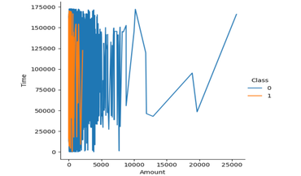

Turning complex datasets into clear decisions.
I build dashboards, analyses, and data stories across SQL, Snowflake, Tableau, Power BI, and D3.js. My work focuses on risk, product decisions, and operational clarity.
Fintech risk and analytics experience across Razorpay, Open Financial Technologies, Easebuzz, and research analytics work at Cold Spring Harbor Laboratory.
Analytics work built for decisions
I help teams understand what changed, why it matters, and what to do next. The portfolio highlights risk analytics, business intelligence, and interactive data visualization work.
Fraud and operational signal
Analyze transaction and product data to surface risk patterns, process gaps, and decision points.
Reliable reporting systems
Build dashboards and KPI views that help stakeholders track change without digging through raw data.
Interactive data stories
Use Tableau, D3.js, SVG, and Vega-Lite to make trends, anomalies, and tradeoffs easier to scan.
Featured Work

Boston Rainfall DataViz
Interactive rainfall exploration that helps viewers compare seasonal patterns and spot extremes.

UMass Boston Visualization
Dashboard story comparing campus metrics in a format built for quick stakeholder review.

Credit Card Fraud Analysis
Notebook-based fraud analysis focused on classification signals and explainable risk patterns.
Open to data and analytics roles.
I am open to data analyst, BI, and analytics engineering opportunities where clean analysis and practical decision support matter.
Start a conversation